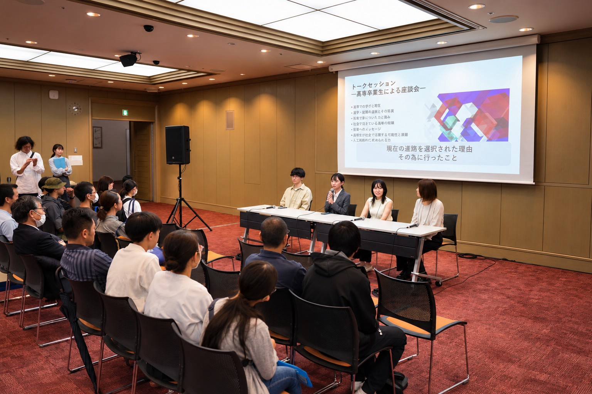
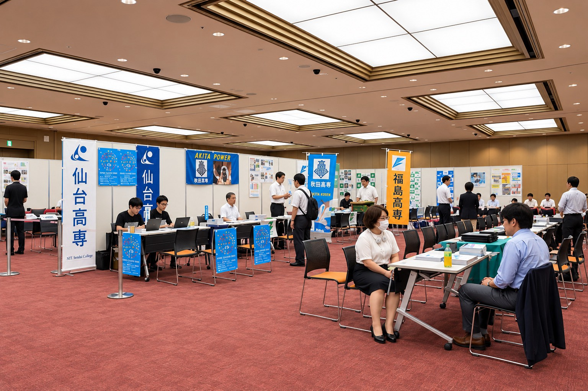
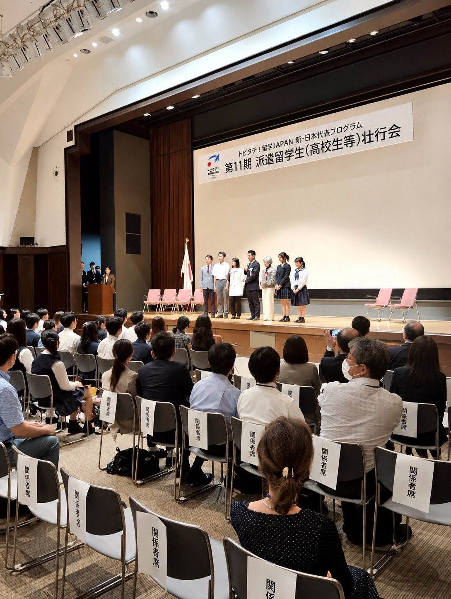
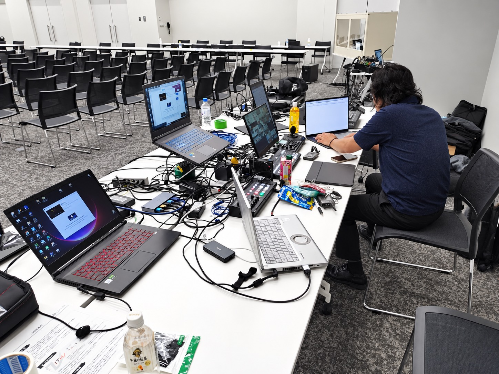

あなたの力で、イベントをもっと特別なものに。
ご応募・お問い合わせは公式LINEより受け付けています。
「イベント運営スタッフ希望」または「テクニカルスタッフ希望」とお送りください。
あなたの力で、もっと感動的な場を。

セミナーやシンポジウム、展示会などの現場で、音響・映像・オンライン配信を中心としたテクニカル業務を担当していただきます。

セミナー・シンポジウム・展示会などの会場で、受付や参加者案内、会場運営のサポートを担当していただきます。




官公庁関連のセミナーやシンポジウム、展示会など、毎回異なるテーマ・会場のイベントに携わることができます。
接客力、対応力、チームワークはもちろん、音響・映像・配信などの専門技術も実践的に身につけることができます。
多くのスタッフと協力し、準備から本番、撤去までひとつのイベントをつくり上げます。
ご応募・お問い合わせは公式LINEより受け付けています。
「イベント運営スタッフ希望」または「テクニカルスタッフ希望」とお送りください。